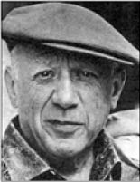
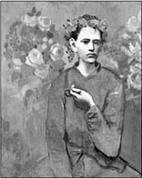

Pablo Picasso
Pablo Picasso (1881-1973)
“Cisimleri gördüğüm gibi değil, düşündüğüm gibi boyarım.”
21 Ekim 1881 günü 20. yüzyılın en verimli sanatçılarından biri dünyaya gelmişti.
İspanya’nın Malaga bölgesinde doğan Picasso’nun tam adı kısaca (!) şudur: Pablo (El Pablito) Diego Jose Santiago Francisco de Paula Juan Nepomuceno Crispfn Cris-piniano de los Remedios Cipriano de la Santfsima Trinidad Ruiz Blascoy Picasso Lopez.
Babası da bir ressam ve sanat eğitmeni olan Picasso, Madrid’deki Royal Academy’de bir sene akademik eğitim görmüştür.
Picasso yaşadığı dönemin en tartışmalı ve en çok tanınan sanatçılarındandır. “Resimlerim beni sürükler” diyerek sanatı kendini ifade etmenin en özgür şekli olarak yorumlamıştır.
Eserlerinde genellikle sıra dışı bir çizgi çizen Picasso’nun “Balık” adlı tablosunu gören bir kişi “Tuhaf” der. “Bunun neresi balık?” 186
Picasso, “O balık değil” der.
“Peki ya ne?”
“Resim! Sadece bir resim.”
“Herkes resmi anlamak istiyor. Neden kuşların ötüşünü anlamaya çalışmıyorlar? Gece, çiçek, kişiyi çevreleyen her şey neden anlaşılmaya çalışmadan sevilir? Ama resme gelince anlamak istiyorlar.”
Georges Braque ile birlikte Kübizm akımının (nesneleri geometrik biçimlerde gösteren bir sanat akımı) öncüsü sayılan Picasso, bir gece evine dönerken kapıda evine girmeye uğraşan bir hırsızla karşılaşır. Yakalamaya fırsat kalmadan hırsız kaçar. Derhâl evine giren Picasso, hırsızın resmini çizerek polis merkezine gönderir. Bir hafta sonra ünlü ressama şu bilgi verilir:
“Sayın üstat! Gönderdiğiniz resim üzerine çoğu sakat olmak üzere yirmi kişi, iki at, bir kedi ve birkaç adet konserve kutusu yakalanmıştır.”
O kadar çok çalışıyordu ki ünlü ressama “çılgın verimli sanatçı” deniyordu. Sık sık açtığı sergilerin birinde, sergiyi gezen bir kadın Picasso’nun yanına gelerek “Bu resimlerden hiç mi hiç anlamadım!” der.
“Siz Çince anlar mısınız?” diye sorar Picasso.
Kadın şaşırarak “Hayır, nereden anlayacakmışım?” diye sorar.
Picasso sakin bir şekilde tablolarından birini düzelterek “Ama bir buçuk milyar insan Çince’yi hem anlar hem de konuşur” der.
Picasso’nun ününü duyan bir hükümdar onu huzuruna çağırarak bir horoz resmi çizmesini ister. Picasso bu resim için hükümdardan üç ay süre ister. Üç ay dolduğunda ünlü ressam elinde boş bir kâğıt ve kalemle gelerek hükümdarın huzurunda hemen resmi çizer.
Bu olaya şaşıran ve aynı zamanda kızan hükümdar, “Bu resmi madem birkaç dakikada bitirecektin de neden benden üç ay süre istedin?” diye sorar.
Picasso, hükümdarı atölyesine davet eder. Birlikte atölyeye gittiklerinde dolabın birini açan Picasso, dolabın içinde bulunan üç yüzü aşkın çizim çalışmasını gösterir ve şöyle der:
“İşte bu birkaç dakikada çizdiğim resim, üç aylık çalışmamın ürünüdür.”
Picasso’nun “Anne ve Çocuk” adlı tablosunu satın almadan önce otel sahibi Arnold Kirkeby, sanatkârdan bunun gerçekten kendi eseri olup olmadığını kontrol etmesini rica eder.
Picasso tablonun kaça satıldığını sorar, “Yüz seksen beş bin dolar” cevabını alınca, biraz da böbürlenerek, “Öyleyse başkasının olamaz, mutlaka benimdir” der.

Pipolu Çocuk, 1905
Picasso, yetmiş beş yıllık hayatının sonunda geride, tablo ve heykeller başta olmak üzere, 240 bin eser bıraktı. Bazı resimleri dünyanın en pahalı sanat eserleri arasında yer almıştır. Örneğin “Garçon â la Pipe” (Pipolu Çocuk) isimli tablosu 2004 yılında 104 milyon dolara satılarak, 1990 yılında 80 milyon dolara alıcı bulan bir tablosuy-la en pahalı tablo rekorunu elinde bulunduran Van Gogh’u geçip Guinness Rekorlar Kitabı’na girmiştir.
Guernica adlı tablo Picasso’nun en ünlü eseri olarak bilinir. Savaşın acı yüzünü net olarak gösteren bu büyük tabloda, 27 Nisan 1937 yılında, İspanya İç Savaşı sırasındaki Alman bombardımanı sembolize edilir.
O dönemde Picasso, Paris’te bulunuyordu. Atölyesinde resmi tamamlamak üzereyken içeri bir Alman subay girer. Resme uzun uzun baktıktan sonra
“Bu resmi sen mi yaptın?” diye sorar.
Picasso öfkeli bir şekilde, “Hayır! Siz!” cevabını verir.
Pablo Picasso’dan...
“Benim arayışlarımdan söz ediyorlar, ben aramam ki... Bulurum.”
“Ne yapacağını iyi biliyorsan, gidip de onu yapmanın ne anlamı var? Nasılsa, biliyorsan böyle bir deneye girişmenin bir anlamı yok. Başka bir şey yap, daha iyi.”
“Anlaşılmaktan daha tehlikeli bir durum var mı? Üstelik bu zaten olası değildir ki hep yanlış anlaşılırsın. Yalnız olmadığını sanırsın, oysa her zamankinden daha yalnızsın.”
“insan hiçbir zaman iyi iş becerdim, üstelik yarın da pazar dememeli, durduğun anda yeniden başlamalısın, bir daha hiç dokunmayacağım diyerek tuvali köşeye atabilirsin. Oysa son hiçbir zaman gelmez.”
“Her şeyi söylemem ama her şeyin resmini yaparım.”
“Çalıştığımda rahatlıyor ve dinleniyorum. Beni esas yoran, hiçbir şey yapmamak ya da gelen anlayışsız misafirleri ağırlamaktır.”
“Yapılmadığını görmeden ölmek için, istediğin şeyi yarına bırakmak yeterli... “